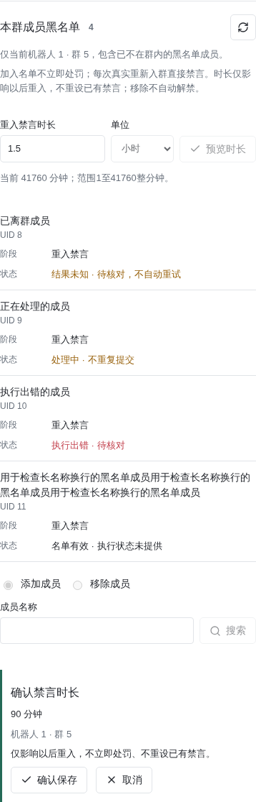
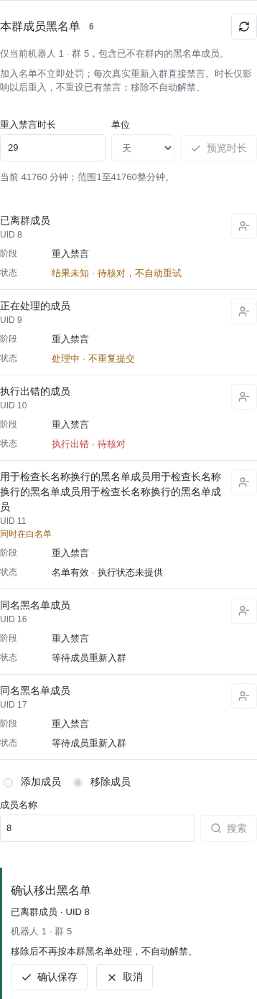
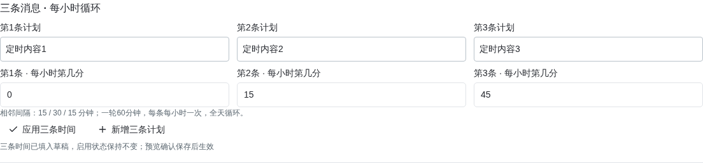
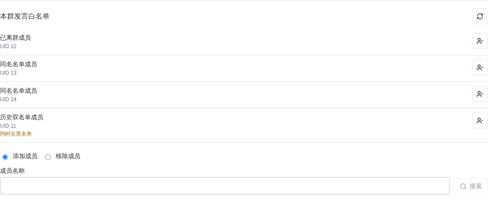
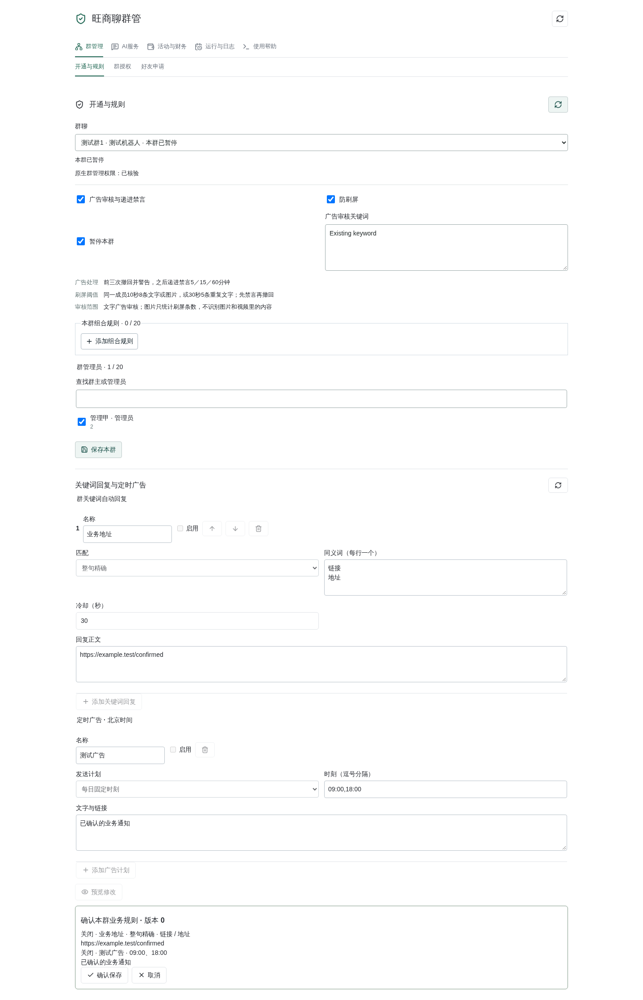

New message text containing six or more consecutive digits in an active, advertising-enabled group receives a fixed one-minute mute before independent recall. This does not enroll the blacklist or consume/reset ordinary warnings. Full-width digits normalize to the same form; spaces, newlines and separators never join runs. Nicknames, sender IDs and transport metadata are not inspected. Long legitimate references and reported/quoted numbers can also match. Owners, administrators, bots and valid manual/automatic exemptions stay protected. Explicit blacklist signatures retain priority. Already-muted members are recalled without shortening or extending their existing native mute, with a final native submission check for intervening mutes. Detection does not wait for OCR or AI. Current authority, historical-message fences, independent receipts and no retries for unknown submissions remain in force. See dated maintenance for actual loading.
The native mute-list read now runs at the final HTTP authorization fence without an additional preliminary roster/list round trip. Incomplete or unknown reads still block submission. Local recall-receipt reconciliation has at most one background task per account; it no longer holds new rule dispatch, and reload drains its actual database work. Native concurrency and queue bounds are unchanged.
An optional follow_group_id binds a destination to an enabled, independent
source on the same native account, CMS endpoint, category and interval.
Self references and recursive chains are rejected. Preview and confirmation
persist an enrollment cutoff: pre-enrollment publications are never replayed,
and re-enabling starts a new cutoff rather than backfilling disabled periods.
The source selects, prepares and uploads once. Only its explicitly accepted native publication can supply the destination's exact account-bound video asset, source ID and digest. The destination does not independently select, download or upload another file. Each group retains its own live authorization checks, idempotency key, duplicate fences and receipt. Unknown source delivery never fans out; unknown destination delivery pauses without retry. Changed source configuration or missing asset evidence cannot fall back to independent selection. Local source bytes are removed through the existing cleanup path; no extra video copy is retained. The panel displays the binding and removes independent category actions for followers. See maintenance for actual loading, dual-group receipt evidence and the separate mobile acceptance boundary.
A valid integer1021 error from the native member-mute route is recorded as a provider refusal, without guessing whether the member departed, was already muted, or lost eligibility. Other routes, generic errors and transport uncertainty retain their existing treatment. Historical unknown receipts are not rewritten or replayed. A complete roster proving current absence blocks both initial and final submission checks with an explicit member-unavailable reason, not a command-format error.
Before escalating while an accepted short mute has not expired, ordinary automatic sanctions check the current native mute list for the same account, group and frozen member identity. A still-muted target is not submitted again or counted as another successful escalation. Failed reads, revocation or identity changes block submission; an actual unmute or rejoin can still permit newly authorized violations. First sanctions, unrelated members and unrelated groups avoid the additional lookup. See dated maintenance for deployment evidence and the limits of historical diagnosis.
Scheduled failures consult durable native image/text intents. A proven pre-submission rejection advances only to a future slot; partial and unknown delivery still pause for reconciliation and are never automatically retried. Existing messages, images and times remain unchanged when future cursors are restored through the normal preview/confirmation interface.
Rankings retain at most512 batches of32 normalized candidates in memory, without message text or new disk storage. Immutable inbox row identity, state and pruning markers invalidate reuse; account, group, ledger, date and authority also bind it. Recall evidence, violations, settlement and managed identities remain live. Cancelled or revoked scans cannot publish late shared results. Qualification and expiration rules for automatic exemptions do not change.
Authenticated native images with zero metadata placeholders may enter bounded group inspection. Actual downloads remain limited to5MiB and decoded dimensions to16384 per side and16 million pixels. Supplied nonzero dimensions must match. Unsupported formats, animation, duplicate attachments and arbitrary URLs remain rejected. Private intake does not return. Missing historical assets are not reconstructed or retrospectively punished; unresolved coverage records specific metadata errors instead of being reported as clear. See dated maintenance for deployment evidence and the separate offline1000-record throughput comparison.
In advertising-enabled groups, fixed solicitation phrases bind a new message to the receiving account's original inbox evidence. Matching senders are enrolled in that group's blacklist, muted for its existing configured duration, and their offending message is independently recalled. No three-warning grace, automatic kick, cross-group enrollment, AI authorization or retrospective punishment is added. Isolated common words and numbers, quotations and reports do not authorize enrollment. Owners, administrators, managed bots and valid manual/automatic exemptions remain protected. One durable keyword intent per enrollment prevents renewal on repetitions; unknown outcomes are never retried. Removal, revocation, promotion, changed identity or policy blocks unsubmitted actions. Mute failure does not skip independently authorized recall; pause or lost authority prevents any new native action. See the maintained content rules for exact signatures and dated maintenance for deployment and acceptance boundaries.
After an earned advertising mute decision, bounded background cleanup no longer occupies that member's rule slot. The first three warnings still require accepted or verified original recalls; counts and the one/three/ten-minute cycle do not change. Pending, accepted, rejected and unknown receipts remain distinct. Cleanup failure never erases an accepted mute, and unknown actions are never retried. Ordinary progressive mutes omit one duplicate preliminary directory read. Native group permissions, a complete roster, the frozen transport identity and target role remain mandatory. Blacklist, anti-raid and delegated paths are unchanged. The existing256-recall limit and inline overflow fallback remain; this is not unlimited capacity or a promise of instant platform response. See dated maintenance evidence for actual loading, offline benchmarks and production acceptance limits.
Keyword, scheduled-send and advertisement-replacement SQLite write transactions now wait on worker threads. Cancellation drains known-outcome bookkeeping without retrying delivery or downgrading accepted receipts. Native authorization still reads exact, current account/group versions synchronously and fails closed immediately on read-lock contention; permissions are not cached across awaits. Ranking decoding, normalization and ordered reduction run in batches of16 with explicit yields and fresh scope checks. Cancellation, revocation or changed account, group, ledger, day or test authority cannot publish stale shared caches. Counts, sorting and automatic exemption thresholds are unchanged. This improves responsiveness, not necessarily total ranking throughput. The historical1305.875ms stall has no captured stack; independent offline reproductions do not prove its cause or production peak-mute acceptance. See dated maintenance evidence for actual load status and measurements.
After a burst's mute decision and original trigger processing have completed, continuations omit redundant preliminary roster reads, not native authorization for new recalls. Matching includes account, group, sender, peer, revision, time window and test generation. New warning batches and unfinished triggers retain preflight; protected identities, warning counts and mute cycles remain unchanged. Exact duplicate automatic mutes recognize their existing record before remote reconciliation of unrelated unknowns. Unknown receipts remain unknown and are never retried. Current mute state does not prove a historical request succeeded. A controlled full restart loaded this round at21:37:58 Beijing time, with the account online at21:38:16. Offline results are not production peak-latency acceptance. See dated maintenance evidence.
Sanction evidence retains safe error categories, bounded numeric provider codes, failure phases and timestamps, never response bodies or credentials. A timeout or generic provider error does not prove departure. Failed readback never downgrades an already accepted mutation receipt. Refreshing the WebUI blacklist separately checks current identities and native mute state for unknown receipts, with one shared group mute query and an extra eight-second budget. Failed checks remain unconfirmed. Current membership or mute state cannot establish the original request's outcome, actor or duration. Reads never rewrite unknown receipts, retry sanctions, extend mutes or remove list entries. Group commands and automatic moderation do not perform this extra readback; missing historical failure details are not fabricated.
Qualifying mutes still precede recalls. A bounded per-bot cleanup lane admits at most 256 recalls with one worker, outside the four deterministic rule slots. Admission failure retains inline handling; it is not unlimited capacity. Queued cleanup is explicitly pending, never reported as recall success, and reserved messages cannot continue into AI or keyword replies. Warning cycles, protected members and final native authorization remain unchanged. Only preliminary flood checks may reuse a valid one-second complete member snapshot. New native mutations still reauthorize; burst counting never awaits OCR. Concurrent duplicates await the original receipt without resubmitting. Every five seconds, at most 32 unknown recall audits are compared against exact account, group, member, message, operation and route-fingerprint matches. Only terminal native receipts refine audits, preserving their original timestamps; accepted is not phone-verified. Unknown results are not retried. Busy database maintenance yields its turn. Supplemental group-role reads share an eight-second budget; unresolved roles and unverified pagination remain unknown. See dated maintenance evidence for separate offline and production measurements.
Completed deterministic workers wake the next item immediately, retaining four slots, a256-item backlog and per-member ordering. A healthy fastlane owns only matching trusted account/group/member/message/revision/time evidence; ordinary chat no longer waits for the same network work. Handoff is not sanction success. Rule queue and execution timings are separate from chat queue, directory and OCR. Existing recall receipts are read-only deduplication, including unknown outcomes; new recalls still require complete native membership authorization.
An expired unknown automatic mute may be quarantined only with a matching submitted terminal-unknown receipt and a fresh authoritative native mute list showing the same verified member is not muted. Preserve the original unknown receipt and reconciliation evidence. Only a new violation can create a new operation; never replay the old message or operation. Final submission rechecks native mute state and authority. Existing mutes, failed reads, revocation and identity changes remain blocking. No policy, list, campaign or finance changes. Submitted requests remain nonpreemptible; offline scheduling is not phone or end-to-end latency acceptance. See dated maintenance evidence for deployment.
With group advertising review enabled, a message exceeding seven explicit lines
(eight or more) follows the existing advertising warning, recall and mute cycle.
Blank and trailing blank lines count; CRLF counts once. LF, CR and Unicode
line/paragraph separators are recognized. Screen wrapping and literal \n do not count.
This is a format restriction, including otherwise ordinary text and quoted reports,
not a semantic claim that every multiline message is an advertisement.
Seven lines or fewer do not trigger this check, replacing the previous five-line
threshold. Other advertising keywords and solicitation rules still apply independently.
Disabling advertising disables this check;
owners, admins, robots and valid speech exemptions remain protected.
No keyword, contact detail, download, OCR, historical replay or policy change is required.
Deployment and live acceptance require separate dated evidence.
A single restricted video or forwarded-chat card remains recall-only. When the same message has verified native-ingress flood evidence, the effective flood category takes precedence and follows the unchanged warning and mute cycle. Submit a qualifying mute before independent recalls, with notices last. Previously recalled messages remain valid burst evidence without resubmission. No video download, OCR wait, threshold change or exemption change is introduced. Loaded by plugin reload at00:42:09 Asia/Shanghai;1,187 regression tests passed, two conditionally skipped. Historical incidents were not replayed for sanctions. New live automatic sanctions and phone rendering require separate evidence.
Private per-instance blacklist_prefixes.json explicitly scopes the receiving bot,
groups and literal display-name prefixes, with a fixed seven-day/10,080-minute mute.
Only current complete native rosters establish names and identities; ASCII P/p
is case-insensitive. Message bodies and inferred cross-account identities do not
qualify. Scan existing members, wake on trusted joins, and reconcile every sixty
seconds through the existing bounded group workers, with at most twenty new
submissions per scan. No image download, OCR, AI, kicking or global mute is involved.
Owners, admins and robots remain protected; manual whitelist conflicts are
reported without silently deleting exemptions. Enrollment and sanctions retain
separate audits. A prefix intent is distinct from real join rounds or administrator
commands, once per enrollment; unknown outcomes are not retried and existing
native mutes are neither shortened nor renewed. Later genuine rejoins retain the
existing blacklist authorization flow. New prefix sanctions pause if the group's
existing blacklist duration is no longer10,080 minutes; no policy is overwritten.
Removing an entry while retaining a matching nickname can cause re-enrollment
while the rule remains enabled. Disabling the private rule neither removes
existing entries nor unmutes members or deletes audits. Chat and AI cannot edit
this authorization. Deployment and live acceptance require separate dated evidence.
Explicit server-owned grants may authorize selected speech-report members to mute
one real-mentioned ordinary member in a specific bot/group: @MEMBER 禁言128
means128 minutes, with an explicit1..4320 whole-minute limit (three days).
@MEMBER 禁言4320 requests three days; longer requests are rejected.
Ordinary automatic mute limits are unchanged. Reports or manager
roles do not implicitly grant this capability. Kicking, unmuting, lists, rules,
finance and Dashboard authority are never delegated. Self, owners, admins, bots,
valid exemptions, blacklisted targets and existing mutes remain protected.
Final submission rechecks current grants and complete native membership; unknown
outcomes are not retried. Implementation does not establish deployment or phone acceptance.
Private menus, friend approval/welcomes, personal knowledge, support, private AI/admin guidance, finance chat and image intake are retired. Preserve historical business data. Fixed group rules, verified native mention/reply lists, and WebUI rules, images, activities and Invitation Settlement remain. Ordinary group admins receive no global Dashboard access. See the migration mapping and current commands. Loaded by a full restart at 01:48 Asia/Shanghai, November 2, 2026. Mute-first is loaded; all six production raid switches remain off pending full live acceptance.
Advertising and flood control share three recall/warning steps, then 1/3/10-minute mutes; expiry of the ten-minute penalty starts a fresh three-warning cycle. Per-member flood thresholds are five messages/three seconds, fifteen/ten seconds, or five identical texts/thirty seconds; supported media count toward rate limits. Submit a qualifying mute after authority/intent checks, then independently recall, with required notices last. Unknown/rejected mutes are not retried; recall checks its own authority, and notification failure cannot erase an accepted mute. New automatic-whitelist eligibility uses yesterday's Beijing top twenty with at least101 eligible texts, without backfilling rank21. Keep thirty-second settling/ refresh, one count/member/thirty seconds and five-minute repeated-text suppression. Each eligible text renews seven days of existing eligibility; seven inactive days expire it. Retained plus new members may exceed twenty. Manual lists and blacklist priority remain unchanged, with all native role/identity protections intact.
Images use WebUI upload only: one per keyword rule, up to three per scheduled plan, one rotated per occurrence; static JPG/PNG/WebP originals each ≤5MB, body ≤2000 characters. Exact keywords win, otherwise saved order selects only one; default same-rule/group cooldown is thirty seconds. Matched, cooling-down or failed replies never fall through to AI. Image precedes text; partial/unknown deliveries never automatically replay. Three-message timing means three independent hourly plans at minutes00/20/40; applying times edits drafts, not confirmation or enablement.
The loaded fix replaces rejection after four image jobs with bounded metadata queues:64 globally,32 per account and16 per group, plus at most two running jobs. Accounts and groups rotate fairly. Waiting consumes the original thirty-second message lifetime and never blocks flood detection or mute-first processing. Overload, expiry and revocation are explicitly unchecked, not clear verdicts or grounds for punishment. Sustained input beyond recognition capacity can still exceed the inspection deadline.
Only resolved ReviewStore records older than ninety days, without unresolved references, are eligible for bounded background cleanup. Unknown receipts, progressive warning cycles and native operation idempotency remain protected. Stale messages and persisted flood-retention watermarks prevent historical replay from recreating retired work. Cleanup yields to business writers, never scanning and deleting history in every message handler. Loaded November 2, 2026 Asia/Shanghai. These changes do not establish live coverage or end-to-end acceptance. See content rules and database maintenance for scope and limits.
Dispatch completion is not sanction success. Content audits distinguish failed preflight verification, rejected execution and unknown results, retaining bounded error labels and numeric provider codes. Legacy recorded-only rows are labeled unconfirmed, never retrospectively rewritten as success or failure. Rule worker logs read persisted outcomes instead of emitting unconditional completed; incoming dispatch ends with dispatch_finished. A later notification failure cannot erase an accepted sanction. Failed or unknown writes are not automatically replayed.
Persisted real join notifications directly wake bounded per-group workers without waiting for ordinary discovery. Unrelated joins do not fetch full rosters or join history. Matching blacklist entries still require a genuine new admission, complete current membership, and current creator/bot authority. Concurrent roster readers share in-flight verification. An unspecified -1 rejection permits one read retry; persistent rejection briefly suppresses duplicate reads, never using stale evidence. Zero latency during provider throttling or network faults is not guaranteed.
Bound native group managers may use real mention or trusted-reply blacklist controls, removal, blacklist listing, and real-mention whitelist addition even when ordinary group replies are disabled. Only these fixed controls and one scoped result reply are admitted; general bot chat and all native target/authority protections remain. Consult maintenance evidence for loading and live acceptance, not offline results.
Blacklist commands require a fresh complete member directory, never a stale
fallback for administrator or target identity. An unspecified provider rejection
with numeric code -1 permits one further read after one second. This retries
only directory reading, not a mute, recall, list mutation or unknown receipt.
Authentication failures, secondary verification, rate limits, transport timeouts
and malformed or conflicting member records do not use this retry.
The original account, lifecycle and permissions remain binding; cancellation or
revocation stops processing. Persistent rejections now explain that the member
interface is unavailable, rather than blaming command syntax. Dashboard feedback
also states that cached membership was not used. Earlier failed commands are not
automatically replayed.
Pending rejoin notices for a group whose bot has lost its native administrator
role, left, or been deactivated are finalized as revoked before provider reads.
They are not repeatedly polled or replayed when permissions are restored.
Enabled advertising checks also recognize narrowly combined pointer solicitations, the Chinese benefit-solicitation phrase plus a 5-to-12-digit contact, and recurring influencer-video expose promotions paired with a 5-to-12-digit contact written in Arabic or digit-by-digit Chinese numerals. Full-width forms, whitespace, zero-width characters and pointer skin-tone variants are normalized or recognized. An isolated pointer, number, ordinary question, report or quotation is not enough. The numerals are promotion evidence, never member-identity evidence. Existing literal keywords, per-group advertising gates, administrator/bot/whitelist protection and progressive sanctions remain unchanged; no AI call is added. Only new messages are eligible. This shared-classifier fix does not prove complete live reception or successful native recalls; deployment evidence is recorded separately.
New entry: Wangshangliao Management → Audit → Bulk flood recall. Existing mute and audit entries are unchanged. Select the receiver and group, search a name or UID, explicitly select an ordinary member, and choose the last 5, 15, 30 or 60 minutes. The end defaults to now; an explicit historical Asia/Shanghai end time is also supported, with the entire interval within 24 hours. Absent senders can be searched by original name or UID and are explicitly marked as having left. Identity requires this receiver's original same-group inbox and an unconflicted UID/native-peer binding verified by an earlier complete roster. Preview the member, exact IDs, count and Asia/Shanghai timestamps before confirming. Only authenticated, reproducible flood windows from this account and group are selected, not ordinary chat or client-supplied IDs. A batch is limited to 500 messages; narrow the interval rather than silently truncating an oversized selection.
This is explicitly confirmed manual administration: whitelisted members can be processed without changing their exemption, blacklisting, warning or muting them. Owners, administrators and managed bots remain protected. Single-use previews expire after five minutes and bind the actor, receiver, group, native member identity, authorization version and exact stored envelopes.
One batch per receiver runs serially, waiting three to five seconds after each receipt before the next request. Batches never fan out simultaneous requests, and a new batch retains the receiver's cooldown. Conservative pacing cannot guarantee that the platform will not apply its own abuse detection. Each action rechecks current authority, native identity and stored routing. An absent sender must remain absent from a fresh complete roster, with no current member using that peer. Rejoin, identity conflicts or managed-account promotion stop the old job and require a new preview. This is explicitly confirmed manual historical administration, not a broader automatic recall, blacklist or mute grant. Deploying the adapter contract change requires a controlled full restart. “Stop remaining recalls” prevents future submissions while retaining independent receipts for in-flight work. Progress separates acceptance, independently verified recalls, skipped messages, unknown results, rejection and unsubmitted messages. Acceptance alone does not prove disappearance on a phone. Accepted messages are skipped; existing unknown or rejected requests are not resubmitted. Ambiguous results, rejection, revoked authority, pauses or target promotion stop the batch. Jobs and receipts are durable, but interrupted jobs never resume on restart. Refresh to reconcile, then explicitly preview any new batch. Expired or platform-rejected messages cannot be guaranteed recallable. These are implementation semantics, not a production deployment or live-test claim.
A historical unknown result must not permanently exempt a blacklisted member from future admissions. Each canonical join remains at-most-once: duplicate notices, commands, renames and restarts never replay the old mute. In-flight requests, missing immutable completion evidence, and admissions at or before that completion remain held for reconciliation.
After a mute request has finished with immutable completion evidence, a strictly later actual admission may receive its own capability, using the configured duration for this bot and group. Fresh native admission history, a complete current roster, identity and current authorization are still required. Keep the original unknown receipt and audit unchanged; new commands cannot use this exception to retry it. Removal, promotion, lost bot permissions and pauses still revoke pending work. No automatic kick, ordinary cap increase or per-message mute renewal is introduced. Platform acceptance, current mute-list membership, phone display and eventual expiry remain separate evidence.
Open Groups → Speech Activity, select a bot and its enabled group. Dates use Asia/Shanghai: the current day starts from zero at midnight. Only today and yesterday's statistics are retained; older message identifiers, labels and collection cursors expire, including stores belonging to inactive bots. This retention applies only to the separate statistics store, not operational inboxes, sanction audits, finance or lottery records.
The view shows message totals, active members, text/emoji, images, videos, forwards, hourly counts and the top 30. Messages count individually, excluding recalls, violations, bots and recognized management commands. The newest 30 seconds await verification; a background collector imports small batches about every 20 seconds and the page refreshes about every 30 seconds. A catching-up notice means the displayed result is incomplete. Restart resumes durable cursors and backfills only the retained dates without dispatching messages or sanctions. Message bodies and media content are never copied into the statistics store.
Search by name or UID, then select an exact scoped member to view their daily count, first/last activity and hourly distribution. Cached complete directories include members with no activity; recently departed speakers remain searchable within the two retained dates. The activity top 30 is not the automatic whitelist ranking. New eligibility requires yesterday's top twenty and at least 101 eligible texts, with 30-second spacing and five-minute duplicate suppression. Existing automatic eligibility survives day changes; each eligible text refreshes a seven-day inactivity period. Seven idle days remove the automatic grant. Retained plus new members may exceed twenty. Only activity timestamps are retained for seven days, not chat bodies. Manual grants remain unchanged; explicit removal blocks historical readdition, and blacklists take priority. Check maintenance evidence separately for deployment status.
Adding or removing other bot managers preserves current confirmed schedules and literal replies. Rebind only rules matching the current tenant version and join epoch, with their native creator still authorized before and after the change. Dashboard-owned rules do not depend on an individual group manager. Rebinding and the manager update share one transaction; already admitted work keeps its old version fence. Future occurrences still verify fresh native roles and send grants. Never revive stale rules, revoked creators, paused groups, departures or lost bot administrator permissions merely because a manager is subsequently added.
Missed occurrences are not replayed and uncertain deliveries are not retried. Previewing and confirming an unchanged plan restores its next future occurrence without editing its text, images or clock. Existing same-account serialization, at least three seconds between groups, and image-before-text spacing remain.
Fixed group controls such as an actual single mention plus 黑名单 or 白名单
now schedule the administrator's incoming command and the bot's response for the
existing approximately twelve-second cleanup. This does not recall the mentioned
member's other messages, delete audit evidence or retry unknown sanctions.
The October24 statement about retaining the incoming command describes the older
version. Both native group administrator/owner status and the exact group's bot
management grant remain mandatory; denial replies explain both requirements.
Append 的来, 私我 and 大秀 to the existing default moderation keywords and
to groups1417872,1459534,1516387. Preserve all other group rules, image/text
campaigns, member lists and management grants. These are moderation triggers,
not automatic-reply keywords, and do not change the warning/mute progression.
A native administrator's actual single mention, or a verifiable reply to the
member's original message in the same group, followed by 黑名单 directly records
the entry. It does not immediately mute or kick. Only a later trusted actual
rejoin uses this robot/group's confirmed duration. Remove membership in the other
list before adding; owners, administrators and bots remain protected.
Blacklist removal does not unmute, and unmuting does not remove the entry.
At23:39:48 Beijing time, deployed readback confirmed moderation-rule alignment and a seven-day/10,080-minute future-rejoin duration for three explicitly authorized groups, plus one authorized whitelist removal that retained its blacklist entry. This is a scoped deployment snapshot, not a change to the29-day product default or automatic propagation to other groups or member lists. Image/text plans and keyword auto-replies were not copied. Offline regression passed, but no actual group command or native sanction was exercised in this round. See the maintenance record for scope and evidence. Earlier dated “no member changes/overlap retained” records below describe their own earlier rounds only.
The October 23, 2026 requirement is now the current contract: blacklists never kick; every trusted actual rejoin directly mutes the member in the group. Code loaded after the full restart at 20:02:56 Beijing time, October 23, 2026 (PID3317496, NRestarts=0); the online configuration workflow passed. No new actual rejoin/mute acceptance was performed. Offline tests and settings readback do not prove native sanctions. The 16:53:53 Beijing-time loading and subsequent three-kick acceptance belong to the earlier policy, not this rule. The user's later “看得见” (“I can see it”) is recorded as user-confirmed phone display for that presentation only, not other screens or new-policy acceptance. Actual expiry after 29 days has not been verified; displayed duration, platform acceptance and current mute status do not prove that future expiry occurred. Entries bind the same receiving robot account, same group and verified target identity, never another group or robot.
Only trusted actual rejoins after addition trigger enforcement. The first and every later rejoin use the confirmed duration for this robot/group to mute and retain the member, never kick, regardless of historical successful-kick counts. Ordinary messages, duplicate join notifications, restarts and repeated adds do not punish or renew a mute. Duration changes affect only new trusted actual rejoins after confirmation. They never reset existing mutes, punish current members, replay historical notices or create daily mute renewals. An unknown receipt pauses that occurrence for reconciliation against the original receipt and platform state; never retry, erase history or invent success. Since October26, a strictly later verified real admission after completion follows the independent authorization rules above. Removing an entry does not unmute an existing mute. The fix loaded on November 2, 2026 Asia/Shanghai makes an authorized bot command or dashboard unmute also remove this group's current blacklist entry after native verification. A changed list version, revoked authority, unknown receipt or failed verification never forces removal; outcomes remain separate. Phone-side unmute has no trusted-event synchronization yet. Natural expiry and reading an absent mute do not remove entries.
| Earlier policy (October 23, 2026 history only) | Current contract (loaded; actual rejoins untested this round) |
|---|---|
| First three actual rejoins were kicked, counting successful kicks | Every trusted actual rejoin directly mutes and retains the member; no kicking |
| Fourth and later rejoins used a fixed 29-day mute | First and later rejoins use this robot/group's confirmed duration: default 29 days, configurable 1..41760 whole minutes |
| Successful-kick count selected the sanction phase | Historical counts and receipts remain evidence, not inputs selecting a new sanction phase |
| Dashboard Group Management → Rules → Blacklist | Group Management → Rules → Blacklist Settings; list/duration edits still require personal preview confirmation |
Owners, administrators and bots are protected. The only exception is an exactly authorized isolated fixture, bounded to its robot, group, target, action and test window; it creates no production exception. The speech whitelist does not override the blacklist. Ordinary automatic kicking remains prohibited and the ordinary 24-hour mute cap is unchanged. The 1..41760-minute range belongs only to this blacklist rejoin path. Guidance AI explains usage only: it cannot read live lists, execute, confirm on the caller's behalf or claim success.
Evidence levels: final offline regression: 1,229 passed, 2 skipped and one audioop warning. Subsequent permission-hint tests: 257 passed, 2 skipped; coverage overlaps and must not be added. Offline bounds/conversion, isolation, confirmation and protection coverage is not native-sanction acceptance. All three concurrency fixes are verified: old notices cannot use a new duration, the final synchronous permission fence, and proven-unsent operations no longer misclassified as unknown. Genuine unknowns remain preserved, without retry. At20:10:45, test group1459282 passed online read/preview/personal commit/readback from41,760 to60 and back to41,760 minutes. Previews did not write; default restored. The first two reads were protective409 refusals because the receiver was a member, without writes. Specific permission hints were added; member actions require a new search, duration actions a new preview. No new kicks or actual mutes occurred. The20:24:00 protection review matched other protected surfaces and retained test tenant217→220 plus audited concurrent Dingfeng dashboard versions4/5. Raw tenants hashes differ; this is not a claim that formal groups never changed. See the maintenance record. New actual rejoin/mute acceptance and future actual expiry remain unverified. Historical three-kick evidence and phone confirmation retain their separate scope. This documentation update performs no production operations; guide/index/PDF regeneration does not synchronize dist.


Three messages · hourly cycle selects three existing plans or creates three disabled drafts. Each plan keeps its own content and image. Defaults are minute 00,20,40: one message every20 minutes, each message once per60-minute cycle. Different gaps are possible:00,15,45 gives15/30/15 minutes including the wrap into the next hour. The selected plans and minutes must be distinct and cyclically ordered. Applying replaces their old timing with24 daily Beijing-local fixed times, running all day; retain individual window schedules for limited hours. Apply three times only changes the local draft and preserves enabled states. Preview and explicit confirmation are still required. Deployment does not alter existing configurations, fill content, enable plans or send messages. These are three independent plans, not three images sent together by one plan. For new plans, explicitly enable each, check its content/images and minute 00/20/40, then preview and confirm save. Applying times alone does not enable anything.
October 25 scheduler fix: moderation-only edits atomically carry forward an already-current business authorization. Manager changes, pauses, membership generation changes, lost permissions and already-stale authorizations never renew it automatically; review and confirmation remain required. In-flight work still carries its original version fence. Due campaigns serialize per receiving account. An accepted image precedes its caption by at least one second; the next campaign starts at least three seconds after the previous one ends. Preflight admission may wait up to120 seconds from the scheduled boundary, then skips with a durable reason instead of replaying. Local pacing does not guarantee a provider quota. Rejections, unknown results and partial delivery are not automatically retried; unknown/partial results remain paused for reconciliation. The form shows recent preflight skips and rejections.
Upload failure: check static JPG/PNG/WebP format, the 5MB original limit, selected robot/group and permission. Wait for progress or timeout recovery, check for an existing asset/save receipt, then personally reselect, preview and confirm. An unknown result pauses for reconciliation, not duplicate upload or token submission. Unsaved or disabled content is not published. For a wrong group, cancel the draft or pending intake before selecting again; missing access never warrants password sharing. This pass only updates guidance. New integration and phone acceptance still need their own planned checks; the dated screenshots/evidence below do not establish them.


Without model-based review, trusted new-message evidence for high-confidence advertising, keywords, all-terms combinations and flooding uses an independent, bounded queue. Chat and AI reply throttling cannot stall this queue. Execution still rechecks current group rules, native roles, target identity and speech exemptions; owners, administrators and managed bots remain protected. Duplicate messages are not sanctioned twice, unknown receipts are not retried, and advertising from before a plugin reload is not replayed. Combination rules still require every term; their names are labels, not matching terms. The existing three-successful-recall warning period remains unchanged. A rule match or completed worker is not proof that the platform accepted a recall or mute.
The server owns versioned DEFAULT_GROUP_RULES in open_store.py. Version 1
enables advertising moderation and flood protection with 21 high-risk phrases
and eleven all-terms literal combinations for payment-screenshot solicitation,
account rental, verification-code collection, video-posting recruitment and
project-group promotion. Broad words, isolated numbers and domain suffixes are
not standalone template triggers. Reporting, quotation and anti-scam protections
continue to apply.
Native activation/claim and server rules admission initialize the template within the existing authorization transaction, only when the scope still has untouched empty rules. Customized rules are preserved. Discovery or joining alone does not apply it, and failed admission, native-role or version checks cannot commit it. Groups receive independent copies. Editing, resuming or restarting never replaces other groups' settings; a template update does not bulk synchronize existing groups. Server admission confirmations bind template content and version, so changes require a new preview. Activation audits record actual rules and template version. Historical messages are analyzed offline, never replayed or sanctioned.
Templates contain no administrators, support editors, business links, knowledge, AI switches, subscriptions, budgets, finance grants, ad content or schedules. Business keyword replies and scheduled ads are not created or enabled. Existing native-role, action-grant and sending checks still apply; matches never enable automatic kicking.
For a proactively joined group, the server can select one live native owner or
administrator and preview/confirm rules admission in Admission and rules.
rules_provision_preview and rules_provision accept only account, group, tenant
version, manager UID and the confirmation token. The token binds the dashboard
actor, membership epoch, version and verified sender identity. Expiry, revocation
or identity changes invalidate it.
In Admission and rules or Group AI, select an active rules-only group,
choose 预览升级正式AI, verify the bot account and group, then 确认升级.
The server-only ai_admission_preview and ai_admission actions accept only
account, group, tenant version and a confirmation token. Chat commands and
ordinary group administrators cannot invoke this control-plane operation.
The group and service must be unpaused. A complete live roster must verify the
bot's native management role and every existing authorized administrator.
The single-use ten-minute preview binds the dashboard actor, full tenant
snapshot, membership epoch, administrator transport identities and service
version. Departure, revocation, rule edits, identity changes or version conflicts
require a new preview.
Confirmation removes only that group's rules-only restriction and increments its tenant version. Moderation rules, managers and invitation attribution remain unchanged. It creates no subscription, payer consent, support-editor or finance grant, and does not change other groups. Group AI and all speaking modes remain off; inconsistent legacy enabled switches are disabled. Topics, hours, limits and unknown-result blocks are retained. The payer must still personally confirm shared usage, and model, budget and active shared-quota checks still apply before AI is enabled separately. Admission is not a plan upgrade, and server nomination is not payer consent.


白名单
@ONE_REAL_MEMBER 白名单
移除白名单 CURRENT_NAME/SAVED_OLD_NAME/EXACT_UID
选择白名单 search-result-number
确认白名单 preview-token
Direct group addition verifies the real mention, complete directory and native/tenant authority before writing and before transaction commit. Dashboard addition verifies complete native membership at search, selection and confirmation; removal checks saved entries in this group without requiring the target still to be a member. Both recheck actor/bot authority and revisions. Previews expire after ten minutes and chat confirmation requires a new message. Changing groups, searching again, cancellation, actor/bot permission changes and whitelist version conflicts invalidate old choices. Target membership, identity or name changes invalidate addition choices only. Removal targets bind only the saved UID, peer and list version, so a target's rename or departure does not invalidate removal. Current actor and bot permissions are still mandatory. Addition still uses a versioned group scope, name query, server-issued selection token and result index, never an arbitrary member identity. Exact UID removal lookup only locates an existing entry in that scope, never authorizes addition. Changes persist with a separate audit; restart and upgrades preserve existing server-maintained entries.
Group Management → Rules → 仅白名单成员可发视频 is scoped to this bot and group, defaulting off for existing groups without the field. When enabled, authenticated videos from ordinary non-whitelisted members are recalled only: no warning, mute or advertising strike is added merely for the video. Manual and currently valid yesterday-qualified automatic whitelist entries may send videos. Native owners, administrators and managed bots remain protected. Images, stickers, audio and filenames are not classified as videos. Independent flood rules still apply. Fast-lane and ordinary processing share the original recall operation key; duplicate events cannot duplicate recalls, and unknown results are never automatically retried.
October 22 source update: after authority_guard(), the member_whitelist guard
compares service.store.tenant(account, group) with the complete original tenant
snapshot and rejects differences as tenant_changed. The same guard runs before
writing and before transaction commit, covered by the final regression and loaded
by the full restart.
The exemption affects only this robot's automatic advertising, media and flood sanctions (mute and recall) in this group. It grants no management, support editing, AI allowance or finance rights and does not affect other administrators' manual actions. Adding an entry does not unmute an existing sanction; use the separately authorized unmute workflow. Administrator guidance explains the server manual and fixed commands without changing the list from natural language or inventing success.

 Guidance may explain how to configure a rule but never handles a real command twice.
Guidance may explain how to configure a rule but never handles a real command twice.
Keywords are group-only and available to ordinary members. Isolation is by robot account and group. Multiple literal synonyms, exact and contains matching are supported without regex or semantic guessing. Exact matches win; otherwise saved order decides one match. Default cooldown is thirty seconds per group/rule. Moderation keywords and automatic business replies have separate storage. Business replies and advertisements are not recalled after twelve seconds.
The current group is implicit. Its authorized managers use:
关键词回复
添加回复 Name|精确|synonym1/synonym2|Confirmed reply
添加回复 Name|包含|synonym1/synonym2|Confirmed reply
修改回复 1 Name|精确|synonym1/synonym2|Confirmed reply
启用回复 1
停用回复 1
删除回复 1
确认回复 preview-token
定时广告
添加广告 Name|每日|09:00,18:00|Confirmed text and links
添加广告 Name|间隔|09:00-22:00|60|Confirmed text and links
修改广告 1 Name|每日|09:00|Confirmed text
启用广告 1
停用广告 1
删除广告 1
确认广告 preview-token
Every edit, deletion and enable/disable requires preview and confirmation by the same sender in the same conversation within two minutes. Changed revisions or authority invalidate the preview. New rules are disabled. No production copy, links or activation are fabricated.
Select a group under Group Management → Rules, then use Keyword replies and scheduled messages. Plans support text/links and up to three rotating images, daily fixed times or intervals within a daily window, including windows crossing midnight. All times are Beijing-local.

Schedules, cursors and send intents persist. Each occurrence is claimed once. Disconnects and restarts skip missed occurrences. Unknown receipts pause for review rather than retry. Pause, departure, editor revocation, missing native bot administrator rights, disabled group replies or removed proactive-send grants stop delivery. Departure removes exact-account/group configuration and cursors while retaining minimal delivery audit.
Only group/warm-group AI receives pc28_analysis; support and administrator
guidance do not. The plugin dynamically supplies the tool in an authorized group
request, independently of the persona's generic tool list. An empty generic list
on the warm-group persona does not block this dedicated path or authorize other
roles. Explicit PC28 requests require the tool call. If a supplier ignores it,
unchecked model text is discarded in favor of a fixed failure notice.
Requests select only pc28_analysis, with the per-turn protocol after persona
and history; no generic tools are enabled. Risk-only questions about guaranteed
wins or borrowing to recover losses need no forced lookup.
The user must explicitly ask about Canada28/PC28, or immediately
continue that established subject. Ordinary messages additionally require
autonomous participation; native mentions require mention replies. Idle tasks
never initiate predictions.
Fixed GET paths on https://pc28.world provide latest draws, history windows of
10/20/30/50, omissions, dragons and third-party next-draw forecasts. Requests obey
the sixty-per-IP-minute cap, caching and 429 backoff. Source attribution remains
internal for verification. See the
primary API documentation.
There is no local prediction algorithm. Empty, expired, resting or failed forecasts produce an explicit explanation and verified historical data or lookup guidance. No invented picks, next-draw probabilities or guaranteed outcomes. Group replies omit source domains and links, including model continuations and fixed failure templates. They retain a third-party-data disclaimer and the non-guarantee notice; internal source verification is unchanged.
A turn allows one tool call, two independently priced/countable/settled model
requests, and forty-five seconds total. Continuation reuses only the current
turn's cooldown eligibility, never quota, budget or permission exemptions.
If a second request cannot be admitted, a fixed template displays checked data
or the failure reason.
Truncated continuations and reasoning-only echoes use the same verified-data
template instead of partial drafts. History summaries count checked draws, not
predict future results. Both dispatched requests remain independently settled.
group_ai.py rechecks the native conversation snapshot before tool continuation
and delivery; deletion, switching or edits invalidate it. A dispatched continuation
with an unknown outcome blocks group AI as model_result_unknown, retaining its
billing state without another automatic call. Template fallback cannot bypass
that guard.
History counts and dragon classifications use deterministic summaries directly,
without a second model calculating totals or relabeling periodic/alternating
patterns as consecutive runs. These query types need one model request and retain
the randomness warning without exposing source links.
Native acceptance is confined to test group 1459282 and the existing bounded
three-account window. Missing native authority, budget or personal payer consent
is a blocker, not permission to expand grants. Restore temporary state and close
the window afterward. Do not change production group AI switches, finances or
connector lifecycles. Keep source, page, configuration and audit snapshots before
loading the plugin after regression and browser checks.
scripts/check_wsl_warm_dialogue_model.py uses the currently bound persona,
configuration, real model and real PC28 API with isolated databases, simulated
group authority and local delivery. This is not native group-send acceptance.
Metering is local to the experiment; real supplier requests can still incur
charges. The one-minute cooldown remains, with at most sixteen model requests
per run. Use --cases for targeted retests; timeout or empty-forecast handling
does not prove normal data availability.
The existing three accounts for test group 1459282 were verified online.
The member picker excludes the robot itself; its two user entries do not indicate
that the robot left the group. Native robot administrator rights are missing,
group AI has not been provisioned by the server, and the payer has not personally
confirmed consent. Native conversations, nickname display and twelve-second recall
acceptance have therefore not been performed in this round. No native permission
promotion, surrogate payer consent, advertisement or real model request was used
to bypass these blockers. Complete the prerequisites before opening the existing
three-account controlled window.
On October 20, 2026, only the moderation plugin was hot-reloaded. One server guidance profile/persona and three account-specific support profiles/personas were created. Business knowledge, public links and editor grants remain unconfigured; no keyword or advertisement was automatically created or sent. Backend regression: 6,723 passed and 52 skipped. Frontend: 32 passed, with a passing type check. Compiled pages and live read-only data passed 390px/1440px checks. All 42 offline guides passed missing-image and overflow checks; four bilingual beginner/ownership PDFs were generated. Formal group configuration, 1,468 financial entries and the main process were unchanged; connectors were not restarted. The three native prerequisites above still block real-group acceptance. Passing automated tests must not be represented as completed native acceptance.